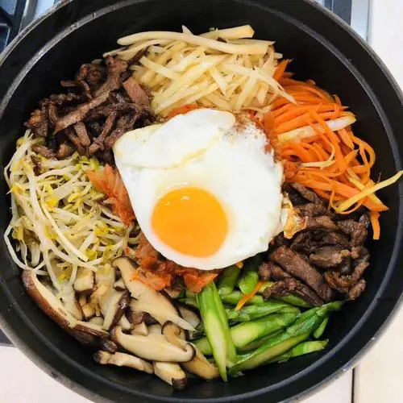

Recipe Detail
Recipe Detail
Bibimbap

Required ingredients
List of ingredients
- 1 cup cooked white rice
- 100g beef, thinly sliced
- 1 carrot, julienned
- 1 zucchini, julienned
- 1 cup spinach, blanched and squeezed dry
- 1/2 cup bean sprouts, blanched
- 1 egg
- 2 tablespoons sesame oil
- 2 tablespoons soy sauce
- 1 tablespoon gochujang (Korean red chili paste)
- 1 clove garlic, minced
- Sesame seeds, for garnish
- Optional: Sliced kimchi, roasted seaweed, or other preferred vegetables
Other
-
- Difficulty level: Easy
- Required time: 20min
Steps
- In a frying pan with a bit of oil, sauté the beef until fully cooked. Season with a tablespoon of soy sauce and set aside.
- In the same pan, sauté each vegetable separately with a little bit of sesame oil until they're tender. Season with salt and set each aside in separate bowls.
- Fry the egg sunny-side up or over easy, based on your preference.
- In a large bowl, place the cooked rice in the center. Arrange the cooked beef and vegetables around the rice in separate sections.
- Place the fried egg on top of the rice in the center.
- In a small bowl, mix together gochujang, remaining soy sauce, garlic, and a bit of sesame oil to make the sauce.
- Drizzle the sauce over the rice and toppings or serve on the side.
- Mix everything together thoroughly before eating. Garnish with sesame seeds.